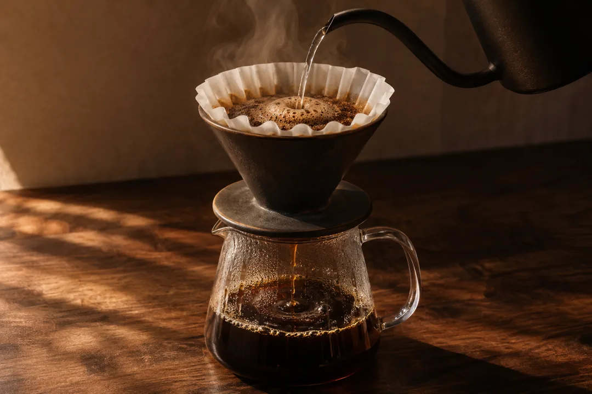

Smart7
EVS-70SV-BT
연결 안 됨
기기 선택 창에서 EVS-70을 선택하세요.

V60 Auto Pour Over
내 레시피
저장한 레시피가 없습니다.
자동 모드
기기 관리
저장된 기기 별칭 관리와 기기 전환
배수 탱크에 남은 물 비우기
드리퍼를 비우고 배출구 아래에 충분한 용량의 내열 용기를 놓으세요.
세척 및 헹굼 세척 후 깨끗한 물로 헹구기
본체 설명서에 따라 세척액과 내열 용기를 준비하세요. 세척 후 대기 시간이 끝나면 깨끗한 물을 넣고 헹굼을 시작하세요.
유량 조절 본체 유량 보정 단계
현재 유량 단계
본체 설명서 (PDF)